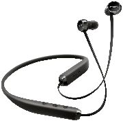
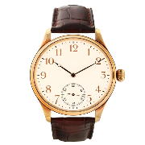

Slip-ons are typically low, lace-less shoes. The style which is most commonly seen, known as a loafer, slippers, or penny loafers in American culture, has a moccasin construction. One of the first designs was introduced in London by Wildsmith Shoes.
$34.05

Earphone
You're using your headphones to drown out your mind...
I like to get in my own...
My favorite thing to do is put my headphones on and cruise around the old neighborhoods....
$4.99

Watch
Don't ever trust a man who wears his watch on the wrong wrist...
You can't turn back the clock...
Time is that which is manufactured by clocks...
I must govern the clock, not be governed by it
$12.99
Mobile
An iPod, a phone, an internet mobile communicator... these are NOT three separate devices!..
The most important impact on society and the world is the cell phone...
Technology can be our best friend, and technology can also be the biggest party pooper of our lives..